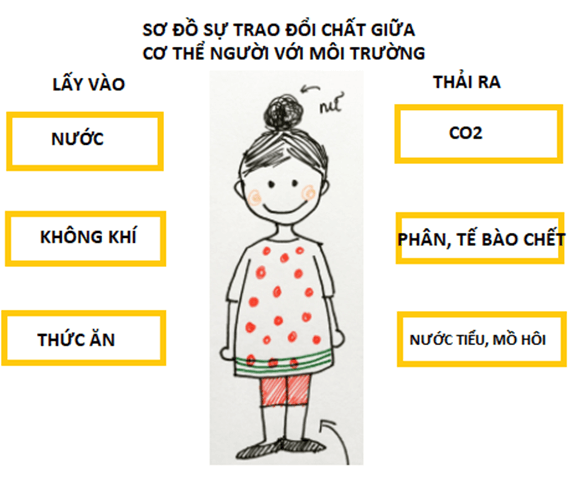
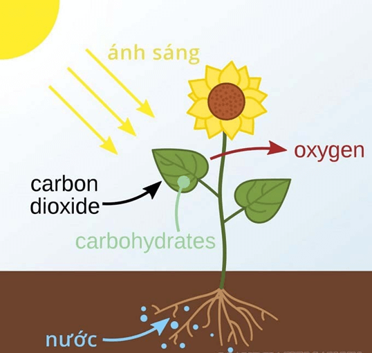
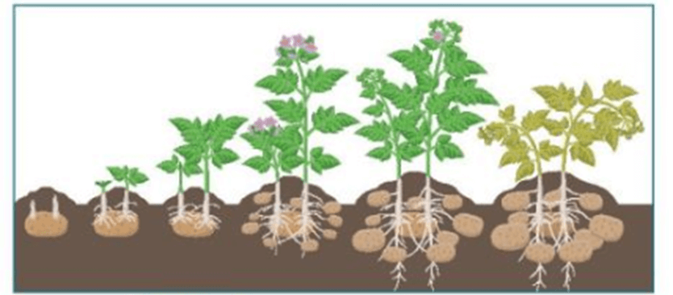
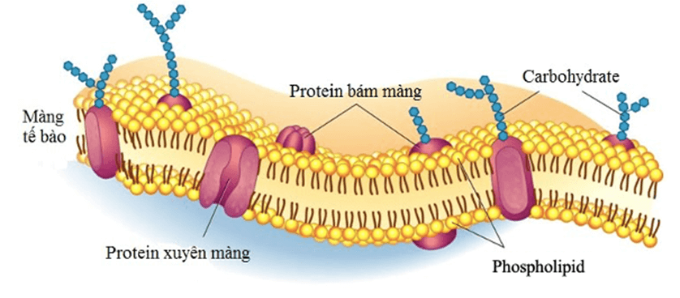
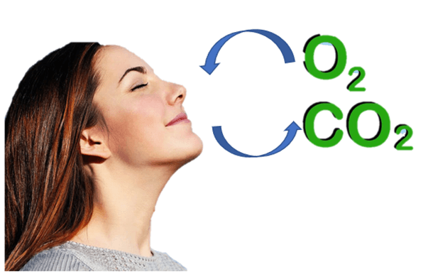

I. Trao đổi chất và chuyển hóa năng lượng
1. Trao đổi chất
Trao đổi chất là quá trình cơ thể lấy các chất từ môi trường, biến đổi chúng thành các chất cần thiết cho cơ thể và tạo năng lượng cung cấp cho các hoạt động sống, đồng thời thải các chất không cần thiết ra môi trường.

2. Chuyển hóa năng lượng
Chuyển hóa năng lượng là sự biến đổi năng lượng từ dạng này sang dạng khác.
Ví dụ:
- Thực vật chuyển năng lượng ánh sáng Mặt Trời thành hóa năng trong quá trình quang hợp.
- Con người chuyển hóa năng lượng từ thức ăn thành năng lượng để vận động.

3. Mối quan hệ giữa trao đổi chất và chuyển hóa năng lượng
Trao đổi chất và chuyển hóa năng lượng luôn diễn ra đồng thời và gắn liền với nhau.
Trong quá trình trao đổi chất luôn có sự chuyển hóa năng lượng, còn chuyển hóa năng lượng chỉ diễn ra khi có trao đổi chất.
II. Vai trò của trao đổi chất và chuyển hóa năng lượng
Trao đổi chất và chuyển hóa năng lượng giúp sinh vật tồn tại, sinh trưởng, phát triển, sinh sản, cảm ứng và vận động.

1. Cung cấp nguyên liệu xây dựng cơ thể
Các chất hữu cơ được tạo thành trong quá trình trao đổi chất giúp xây dựng tế bào, mô và cơ quan, làm cho cơ thể lớn lên và phát triển.

2. Cung cấp năng lượng cho hoạt động sống
Quá trình chuyển hóa năng lượng tạo ra năng lượng cần thiết cho các hoạt động sống như:
- Vận động.
- Sinh trưởng.
- Sinh sản.
- Cảm ứng.
- Hoạt động của các cơ quan.
3. Đào thải các chất không cần thiết
Các chất thải sinh ra trong quá trình trao đổi chất sẽ được cơ thể đào thải ra ngoài để duy trì môi trường trong ổn định.
Ví dụ:
- Thải khí CO₂ qua phổi.
- Thải nước tiểu qua thận.
- Thải mồ hôi qua da.

Ghi nhớ
- Trao đổi chất là quá trình lấy chất từ môi trường, biến đổi và thải chất ra ngoài.
- Chuyển hóa năng lượng là sự biến đổi năng lượng từ dạng này sang dạng khác.
- Trao đổi chất và chuyển hóa năng lượng luôn gắn liền với nhau.
- Hai quá trình này giúp sinh vật tồn tại, phát triển và duy trì mọi hoạt động sống.